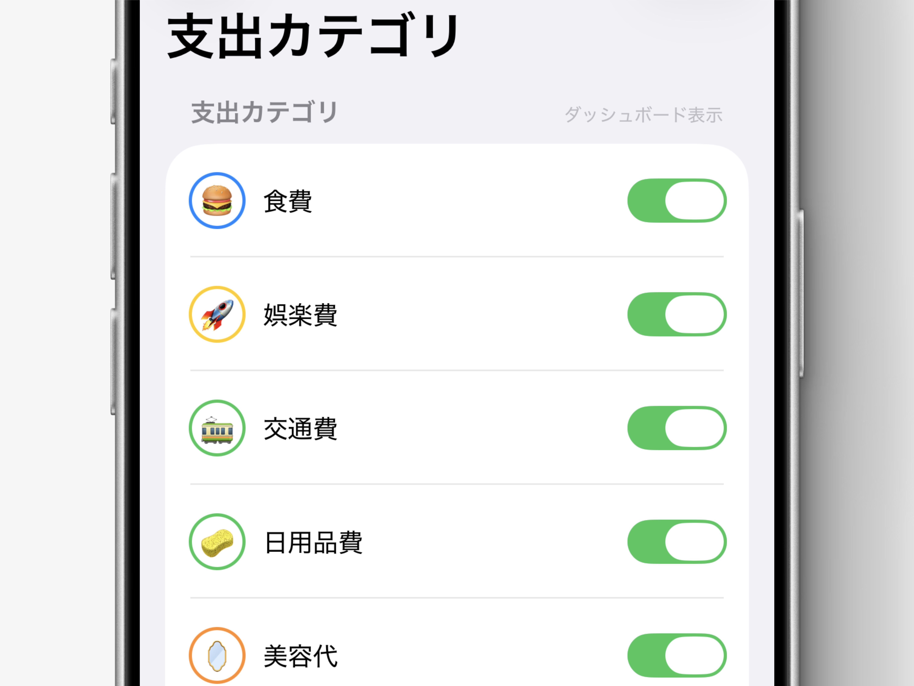

ひと目で分かる、
自分だけのカテゴリ管理
Liltでは、支出カテゴリごとに 絵文字と色を設定できます。 記録追加時やダッシュボードでカテゴリを選ぶ時も、 ひと目で直感的に選びやすくなります。 設定した色はグラフや背景のグラデーションにも反映されます。

今回のコツ
- 支出カテゴリごとに、絵文字と色を設定できます。
- 絵文字を設定すると、カテゴリ選択時に直感的に見分けやすくなります。
- 設定した色は、ダッシュボードのグラフや背景デザインにも反映されます。
使い方
- 画面右上の設定ボタンをタップします。
- 「支出カテゴリ・予算」 を開きます。
- 設定したいカテゴリの右側にある丸をタップします。
- 色を選択する画面が表示されます。
- 画面左上の「絵文字を設定」をタップします。
- 絵文字一覧から、カテゴリに設定したい絵文字を選択します。
カテゴリ色について
設定した色は、 ダッシュボードのグラフカラーとして使用されます。 また、その月のカテゴリごとの支出状況に応じて、 背景のグラデーションも切り替わります。 支出の傾向を、見た目からも自然に把握しやすくなります。
補足
各支出カテゴリの右側にあるスイッチでは、 ダッシュボードにそのカテゴリを表示するかを選択できます。 オフにするとダッシュボード上では非表示になりますが、 データの整合性を維持するため、 支出合計額・累計貯金額・貯蓄の累計推移には計算対象として保持されます。